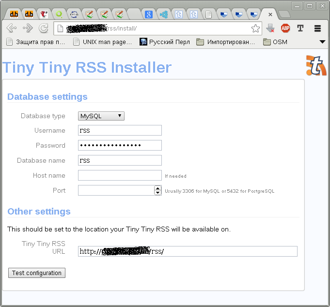
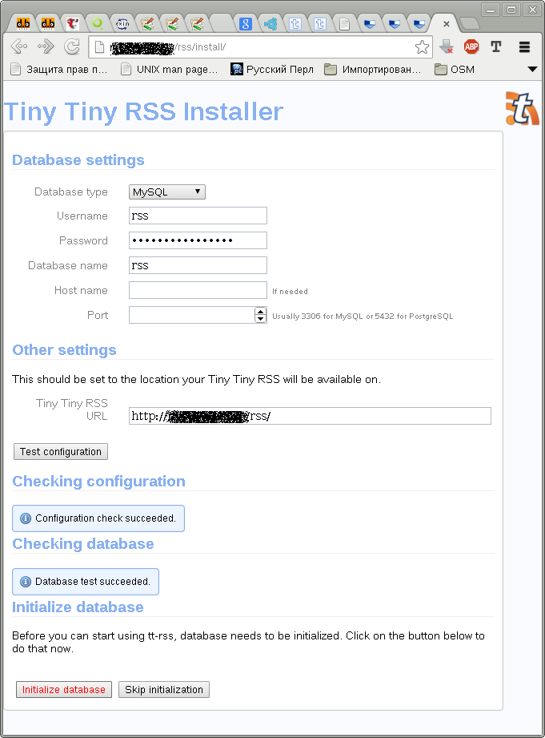
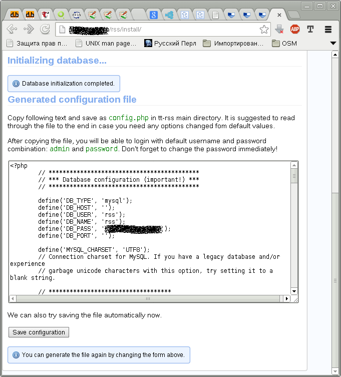
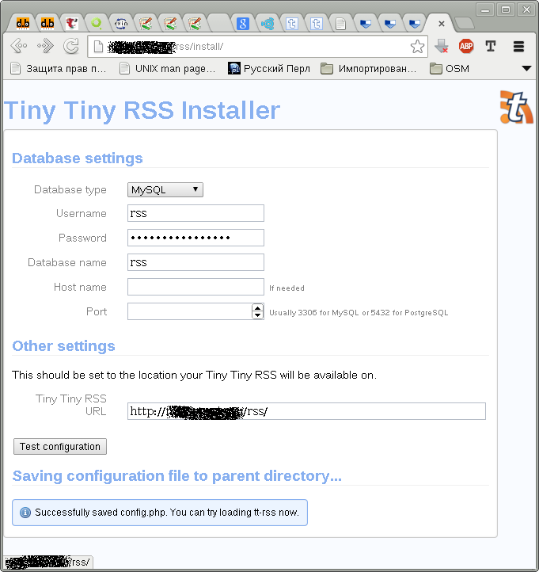
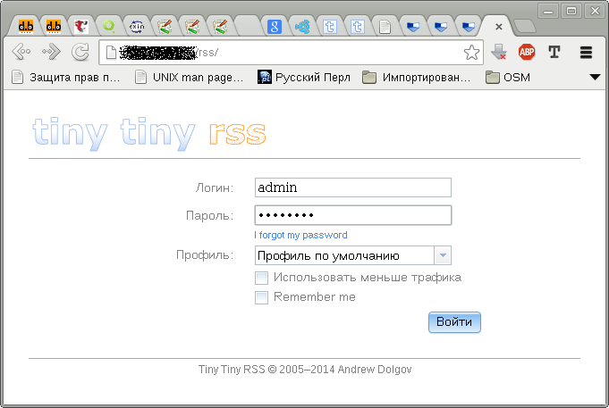

TinyTinyRSS - это веб-приложение для чтения RSS-подписок. Оно использует MySQL для хранения учётных записей пользователей и информации из лент новостей. Для обновления лент используется отдельный демон или скрипт, запускаемый при помощи планировщика задач.
Находим на странице http://tt-rss.org/redmine/projects/tt-rss/wiki ссылку на скачивание. Скачиваем тарболл и распаковываем:
$ wget https://github.com/gothfox/Tiny-Tiny-RSS/archive/1.11.tar.gz $ tar xzvf Tiny-Tiny-RSS-1.11.tar.gz
Перемещаем каталог с приложением туда, откуда к нему будет обращаться веб-сервер:
# mv Tiny-Tiny-RSS-1.11 /usr/local/share/ttrss
И даём веб-серверу права доступа к каталогу с приложением:
# chown www-data:www-data /usr/local/share/ttrss
# find /usr/local/share/ttrss -type d -exec chmod u=rwx,g=rx,o= \{\} \;
# find /usr/local/share/ttrss -type f -exec chmod u=rw,g=r,o= \{\} \;
Если php5-fpm ещё не был установлен, время сделать это:
# apt-get install php5-fpm
По умолчанию в php5-fpm имеется общий пул, настройки которого находятся в файле /etc/php/fpm/pool.d/www.conf, но в данном случае я предпочту настроить для этого приложения отдельный пул, поскольку это приложение будет использоваться редко и я не хочу постоянно держать запущенными лишние процессы. Кроме того, разные пулы, даже будучи запущенными от имени одного и того же пользователя, позволяют снизить эффект взаимного влияния разных приложений друг на друга: если одно из приложений вдруг начнёт использоваться больше остальных, оно не займёт процессы других пулов, выделенные для обработки других приложений.
Создадим файл пула /etc/php5/fpm/pool.d/rss.conf со следующим содержимым:
[rss] user = www-data group = www-data listen = /var/run/rss.sock listen.owner = www-data listen.group = www-data listen.mode = 0660 pm = ondemand pm.max_children = 2 pm.process_idle_timeout = 10m access.log = /var/log/rss.access.log
Пул называется rss, процессы пула работают от имени пользователя www-data и группы www-data. Пул обрабатывают запросы, поступающие на юникс-сокет /var/run/rss.sock, доступный на чтение и запись только пользователю и группе www-data. Процессы пула порождаются только при обращении и завершаются, если к ним не было обращений более 10 минут. В пуле может быть не более 2 процессов. Журнал обработанных запросов будет вестись в файле /var/log/rss.access.log
Осталось перезагрузить php5-fpm, чтобы добавить новый пул:
# /etc/init.d/php5-fpm reload
Если в системе ещё не установлен веб-сервер nginx, поставим его:
# apt-get install nginx-light
Теперь можно отредактировать файл /etc/nginx/sites-available/default, добавив в него следующую секцию:
location /rss {
alias /usr/local/share/ttrss;
location ~ \.php$ {
fastcgi_pass unix:/var/run/rss.sock;
fastcgi_index index.php;
include fastcgi_params;
}
}
Если нужно настроить TinyTinyRSS для работы на отдельном доменном имени, например rss.domain.tld, то можно создать файл /etc/nginx/sites-available/rss со следующим содержимым:
server {
listen 80;
server_name rss.domain.tld;
root /usr/local/share/ttrss;
location ~ \.php$ {
fastcgi_pass unix:/var/run/rss.sock;
fastcgi_index index.php;
include fastcgi_params;
}
}
Чтобы вновь созданная конфигурация была задействована, нужно создать символическую ссылку на неё в каталоге /etc/nginx/sites-enabled/:
# cd /etc/nginx/sites-enabled/ # ln -s /etc/nginx/sites-available/rss rss
Осталось перезапустить веб-сервер:
# /etc/init.d/nginx restart
Разработчики TinyTinyRSS рекомендуют для хранения настроек и лент использовать СУБД PostgreSQL, но возможно использовать и MySQL. Именно его я и настрою. Если сервер MySQL ещё не установлен, сделайте это:
# apt-get install mysql-server-5.5
После установки СУБД, нужно подготовить пустую базу данных и пользователя, от имени которого приложение будет подключаться к базе данных. Соответственно, этот пользователь должен иметь полный доступ к своей базе данных. Создадим базу данных и пользователя:
$ mysql -uroot -p mysql
> CREATE DATABASE rss CHARSET UTF8;
> INSERT INTO user(user, password, host) VALUES('rss', PASSWORD('rss_password'), 'localhost');
> FLUSH PRIVILEGES;
> GRANT ALL ON rss.* TO rss@localhost;
> FLUSH PRIVILEGES;
Вместо пароля rss_password я подставил 16-символьный пароль, сгенерированный программой pwgen из одноимённого пакета:
$ pwgen 16
Теперь перейдём на страницу настройки веб-сервера http://domain.tld/rss/install/ или http://rss.domain.tld/install/, в зависимости от выбранного вами варианта настройки веб-сервера:
Вводим настройки подключения к базе данных и нажимаем кнопку "Test configuration":
После успешной проверки подключения к базе данных нажимаем на кнопку "Initialize database":
Запоминаем имя созданного пользователя admin и его пароль password, а затем сохраняем сгенерированный файл конфигурации нажатием на кнопку "Save configuration":
После того, как конфигурация сохранилась, можно перейти по ссылке с текстом "loading tt-rss now":
Страница входа в приложение:
Не забудьте сразу же войти в систему и поменять пароль пользователя admin на нечто более сложное, нежели слово password.
На странице http://tt-rss.org/redmine/projects/tt-rss/wiki/UpdatingFeeds описано несколько разных способов обновления RSS-лент. Я решил остановиться на многопроцессном демоне обновлений update_daemon2.php. Добавим демону права на запуск:
# chmod ug+x /usr/local/share/ttrss/update_daemon2.php
Теперь создадим init-файл /etc/init.d/ttrss для управления демоном (его можно скачать по ссылке ttrss):
#!/bin/sh
### BEGIN INIT INFO
# Provides: ttrss
# Required-Start: $syslog $remote_fs $network
# Required-Stop: $syslog $remote_fs $network
# Should-Start:
# Should-Stop:
# Default-Start: 2 3 4 5
# Default-Stop: 0 1 6
# Short-Description: Start the TinyTinyRSS updates daemon.
# Description: Start the TinyTinyRSS updates daemon.
### END INIT INFO
PATH=/sbin:/bin:/usr/sbin:/usr/bin
DAEMON=/usr/local/share/ttrss/update_daemon2.php
NAME=ttrss
DESC="TinyTinyRSS update daemon"
PIDFILE=/var/run/$NAME.pid
SCRIPTNAME=/etc/init.d/$NAME
USER=www-data
GROUP=www-data
test -x $DAEMON || exit 0
set -e
. /lib/lsb/init-functions
case "$1" in
start)
log_daemon_msg "Starting $DESC" $NAME
if ! start-stop-daemon --start --oknodo --quiet --background --make-pidfile \
--chuid $USER:$GROUP --pidfile $PIDFILE --exec $DAEMON
then
log_end_msg 1
else
log_end_msg 0
fi
;;
stop)
log_daemon_msg "Stopping $DESC" $NAME
if start-stop-daemon --stop --retry 30 --oknodo --quiet \
--pidfile $PIDFILE --exec $DAEMON
then
rm -f $PIDFILE
log_end_msg 0
else
log_end_msg 1
fi
;;
restart|reload|force-reload)
check_syntax
$0 stop
$0 start
;;
status)
status_of_proc -p "$PIDFILE" "$DAEMON" ttrss && exit 0 || exit $?
;;
*)
echo "Usage: $SCRIPTNAME {start|stop|restart|reload|force-reload|status}" >&2
exit 1
;;
esac
exit 0
Включим автоматический запуск и остановку демона в процессе загрузки, выключения и перезагрузки системы:
# insserv ttrss
И запустим демон обновлений прямо сейчас:
# /etc/init.d/ttrss start
Приложение настроено, дальнейшая процедура создания пользователей и добавления подписок уже выходит за рамки заметки.